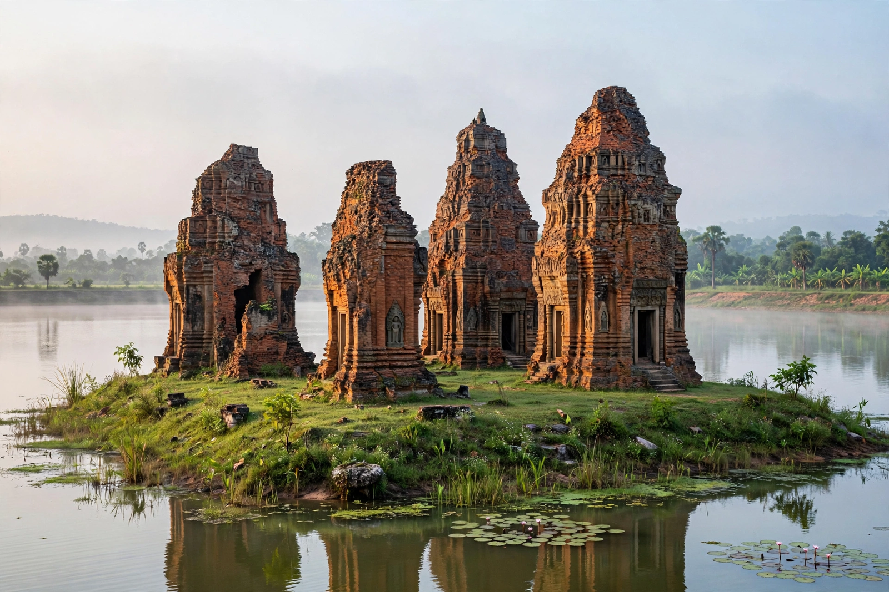

| Yasovarman I | |
|---|---|
| King of the Khmer Empire | |
| Reign | c. 889 – 910 AD |
| Predecessor | Indravarman I |
| Successor | Harshavarman I |
| Father | Indravarman I |
| Posthumous name | Paramashivaloka |

Yasovarman I (Khmer: ព្រះបាទយសោវរ្ម័នទី១) was king of the Khmer Empire from about 889 to 910 AD. Son of Indravarman I, he is remembered as the founder of Yasodharapura, the capital at Angkor, and as one of the empire's great builders of temples and hydraulic works.
Yasovarman succeeded his father Indravarman I around 889, apparently after a contested succession. Early in his reign he completed the island temple of Lolei in his father's reservoir, the Indratataka, at the old capital of Hariharalaya, dedicating it in 893 to his ancestors. He then shifted the centre of the kingdom to the Angkor plain, where the hill of Phnom Bakheng became the axis of his new capital.
Yasovarman's building programme was immense. At Angkor he crowned Phnom Bakheng with a five-tiered sandstone pyramid temple — among the first great temple-mountains of Angkor — and excavated the Yasodharatataka, the East Baray, a reservoir roughly 7.5 by 1.8 km used for irrigation and ritual. He also built the hill temples of Phnom Bok and Phnom Krom, each bearing a central sanctuary with three towers dedicated to the Hindu Trimurti of Brahma, Vishnu and Shiva. Across the empire he founded ashramas, hospices for ascetics and travellers, at least a hundred of which are attested by inscriptions, each associated with a religious order.
Yasovarman died about 910 and received the posthumous name Paramashivaloka, "he who has gone to the supreme world of Shiva." His sons Harshavarman I and Ishanavarman II succeeded him in turn, ruling from Yasodharapura. His choice of the Angkor plain determined the location of the Khmer capital for the next five centuries, culminating in Angkor Wat and Angkor Thom.